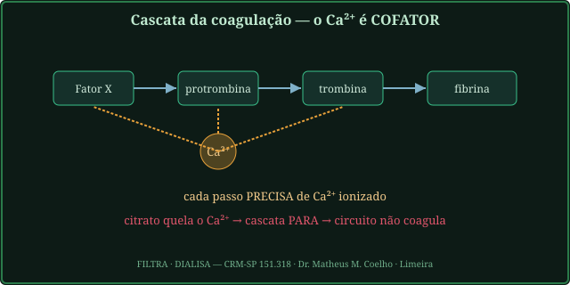
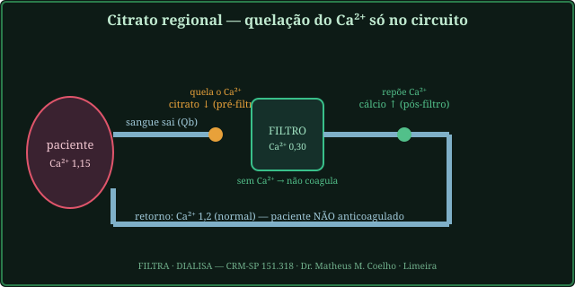
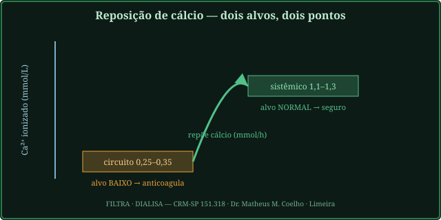
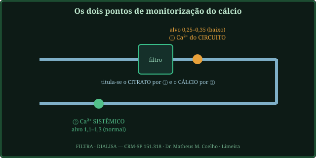
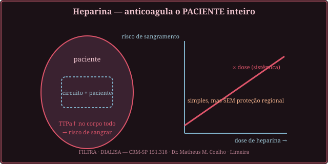
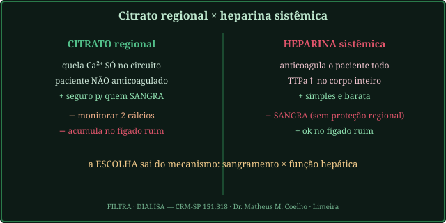
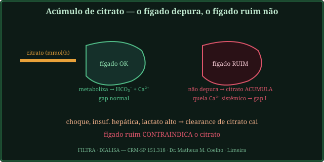
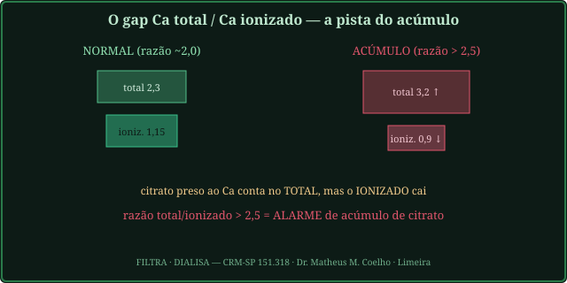

O dilema: sem anticoagulante o circuito coagula e a sessão para; com
anticoagulante sistêmico o paciente sangra. A anticoagulação regional por citrato resolve o dilema —
age só onde o sangue corre fora do corpo. As Fig. 1–8 voltam no Caso, na Trilha e na Avaliação. Atribuição em
CREDITS.md (em curadoria).
A cascata de coagulação precisa de Ca²⁺ ionizado em vários passos (os fatores II, VII, IX, X dependem dele). Se removermos o Ca²⁺, a cascata não dispara. O citrato faz exatamente isso: quela (sequestra) o Ca²⁺ ionizado. Infundido antes do filtro, derruba o Ca²⁺ do circuito para ~0,25–0,35 mmol/L — e o circuito deixa de coagular (Fig. 1).


O segredo é a geografia: o citrato age só no circuito; o cálcio reposto no retorno restaura o paciente. Por isso monitoram-se dois cálcios. O Ca²⁺ do circuito (pós-filtro) tem alvo baixo (0,25–0,35 mmol/L) para anticoagular; o Ca²⁺ sistêmico tem alvo normal (1,1–1,3 mmol/L) para a segurança do doente. Titula-se o citrato pelo primeiro e o cálcio pelo segundo.


A alternativa é a heparina: potencia a antitrombina e anticoagula o paciente inteiro (TTPa↑ no corpo todo). É simples e barata, sem o trabalho de vigiar dois cálcios — mas, sem proteção regional, o risco de sangramento sobe com a dose. É a escolha de quem não tem risco de sangrar.


O citrato que volta ao paciente é metabolizado (fígado/músculo) a bicarbonato e Ca²⁺ liberado. Se o clearance hepático cai (choque, insuficiência hepática, lactato alto), o citrato acumula e quela Ca²⁺ sistêmico: o Ca²⁺ ionizado cai, mas o Ca total sobe (o cálcio preso ao citrato conta no total). A pista é a razão Ca total / Ca ionizado — quando passa de 2,5, é acúmulo, e o fígado ruim contraindica o citrato (Fig. 7–8).


Tudo isto serve à homeostasia: manter o circuito patente para a máquina substituir as funções renais (depurar escórias por difusão/convecção, retirar volume por ultrafiltração) sem criar dois problemas novos — sangramento (heparina em excesso) ou distúrbio do cálcio/ácido-base (acúmulo de citrato). A boa anticoagulação é invisível: o sangue corre, o paciente não sangra e o meio interno volta à faixa.
O gráfico computado mostra o Ca²⁺ ionizado ao longo do circuito: cai no pós-citrato (anticoagula) e volta ao normal no retorno (reposição). A homeostasia é exatamente isso — o circuito protegido, o paciente intacto. Fig. 4 mostra os dois pontos onde se mede.
UTI, mesma máquina de TRRC, anticoagulações diferentes. A pergunta de cada ato: citrato ou heparina — e por quê? Volte às Fig. 2, 6 e 8: o mecanismo (sangramento × fígado) decide.
Porque o sangue corre parado e lento sobre superfícies estranhas (cânulas, membrana). A cascata de coagulação dispara → o filtro coagula → a sessão para. É preciso anticoagular o circuito.
Porque o paciente crítico muitas vezes já sangra (cirurgia, CIVD, plaquetopenia). Anticoagular o corpo inteiro (heparina) piora isso. Daí a ideia de anticoagular só o circuito — regional.
O Ca²⁺ é cofator da coagulação. O citrato infunde antes do filtro e quela o Ca²⁺ do sangue do circuito (cai a ~0,25–0,35 mmol/L) → sem cálcio, a cascata não dispara localmente. Depois do filtro, repõe-se cálcio.
~0,25–0,35 mmol/L (baixo). Acima disso, ainda há cálcio para coagular (subdosagem). Titula-se a dose de citrato (mmol/L de sangue) por esse Ca²⁺ pós-filtro.
Normal (1,1–1,3 mmol/L). É o cálcio do paciente, restaurado pela reposição pós-filtro. Titula-se o cálcio por ele. Dois números, duas alavancas (Fig. 4).
Anticoagula o paciente inteiro (potencia a antitrombina → TTPa↑ no corpo todo). Simples, sem dois cálcios para vigiar — mas o risco de sangramento sobe com a dose, sem proteção regional.
Citrato regional. Como não anticoagula o paciente, o risco de sangramento fica ≈ basal. A heparina, sistêmica, somaria risco. Para o doente que sangra, o citrato é a escolha de mecanismo.
O citrato que volta é metabolizado pelo fígado/músculo. Se o clearance cai (choque, insuf. hepática), o citrato acumula e quela Ca²⁺ sistêmico. O fígado ruim contraindica o citrato.
Pela razão Ca total / Ca ionizado: o total sobe (citrato-Ca conta) e o ionizado cai. Razão > 2,5 = alarme. O número total isolado engana; o gap é a pista (Fig. 8).
A anticoagulação mantém o circuito patente para a máquina substituir funções renais (difusão/convecção/UF) sem criar sangramento ou distúrbio do cálcio. A boa anticoagulação é invisível — devolve o meio interno à faixa.
Os controles do Lab movem este gráfico. As três barras mostram o Ca²⁺ ionizado (mmol/L) nas estações do circuito: paciente (entrada) → pós-citrato (baixo, dentro da faixa anticoagulante laranja) → retorno (normal de novo, pela reposição). A curva azul é o gap Ca total/ionizado em função da função hepática: à esquerda (fígado ruim) o gap sobe e cruza a linha de alarme (2,5); o marcador é o paciente atual. Acima da linha → acúmulo de citrato.
| Saída | Atual | Comentário |
|---|---|---|
| Anticoagulação recomendada | — | sangramento × fígado |
| Ca²⁺ no circuito (mmol/L) | — | alvo 0,25–0,35 (anticoagula) |
| Ca²⁺ sistêmico (mmol/L) | — | alvo 1,1–1,3 (paciente) |
| Gap Ca total/ionizado (razão) | — | > 2,5 → acúmulo |
| Carga de citrato / TTPa | — | mmol/h · razão |
| Risco de sangramento resultante | — | citrato ≈ basal |